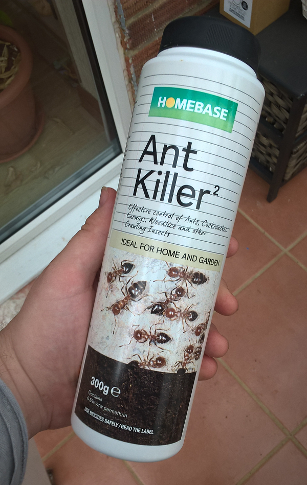
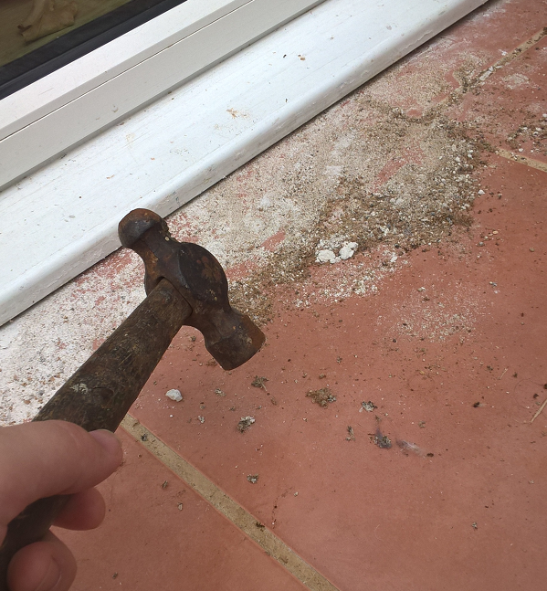

Michal Paszkiewicz
ant powder friggin sucks
Before I get started on the topic of slaughtering entire armies of ants, I would like to mention that I do not dislike ants in general - only particular cases. When they are not invading my house, I wouldn't think about killing one of them at all. In fact, I am far from the stereotypical boy who burns ants with magnifying lenses - I would much rather observe them and if it came to war with another bug type, I would definitely side with the ants.
Yes, ants are brilliant little creatures that are in some ways as advanced as us - they build immense and complex structures; they excel at cooperation (although one could argue that we don't); they are an important part of the circle of life and they would make a keen ally against all the far more creepy creepy crawlies.
When our house was first assaulted by ants in the Summer of 2016, I did not realise that this could be a recurrent issue. The first time it happened, it was the ant air force. My conservatory went from being a lovely tiled floor to something that looked like the zombie apocalypse within a matter of minutes. First I tried to open the window and to sweep them out. But this turned out to not be the easiest of tasks when dealing with flying insects. Then came the moment that the hammer first came out. In a very extended flurry of blows that was almost as long as some of the fight scenes in The Hobbit films, the ants were vanquished. And thus the game of ant-hammer was simultaneously created. Then I repeated this every day for almost a week.
After looking for alternative, less violent solutions to dealing with the ants online, I came about a few hypothetical solutions:
- Making barriers of salt all over the place
- Ant-stopping gel
- Ant powder
Immediately I went to Homebase and bought ant-stopping gel and ant powder (see picture below for the ant powder). My first attempt at using chemicals to deal with the ants was to use the gel. The ants seemed entirely uninterested and wouldn't go near it, even when (frustrated as I was) I kept bullying a particular ant to go into one of the small holes. At that point I decided to try the hammer one last time, after which I nuked the whole conservatory with salt. They didn't come back that year. But I had only won the battle, not the war.
When the ants returned this year (2017), we managed to start the fight while it was just infantry. After a short period of time where I thought I was going to be eaten alive, I managed to gain the upper hand in the conservatory once more, all thanks to the hammer. This was the point at which I decided to use the ant powder. The ants were always nesting under the doorstep leading out of the house into the conservatory. So, after blowing puffs of Ant Killer onto all the entrance points to the conservatory and outdoor ant-paths, I emptied the rest of the powder under the doorstep, to ensure that if they ever did come back, they would all die a horrendous death, as specified on the powder's bottle.
For a few weeks there was quiet. Some would say that it was arrogant of me to think the year's battle was won again. Others might predict a flanking movement on the part of the ants - I had only protected one space and there was a whole house that the ants could pick on instead!
But noone could have predicted what actually happened. In a bold move, the ants decided that this ant-killer powder was only causing them flesh wounds and that they could just go through it instead.
In fact, the ants were so unperturbed by Homebase's finest Ant Killer powder, that I may as well have just put icing sugar everywhere instead. For when a few weeks later I looked again, I beheld the sight of an ant colony that had been comfortably created within the Ant Killer powder.
So, as on previous occasions, the hammer came out and the game of whack-an-ant ensued. As far as I can tell, killing every single little critter personally before covering the floor with salt is the only viable method of keeping ants away short of a scorched-earth policy. I would be interested in seeing what Homebase has to say about this abysmal product they sell to desperate house-owners.
Have there actually been any tests conducted as to whether this powder should work?
Does it only maybe work on certain types of ants?
If so, why doesn't the label specify?
Have my ants evolved and mutated a defence against the powder?
Can I actually win?
One way or another, I highly recommend that you do not buy this powder and that you find yourself a handy hammer instead.
published: Sun Jun 18 2017